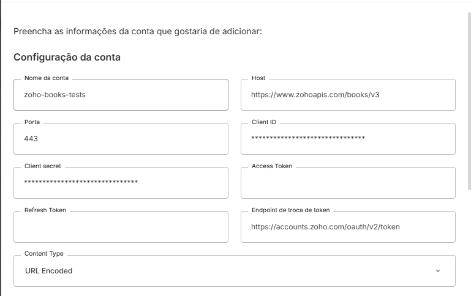
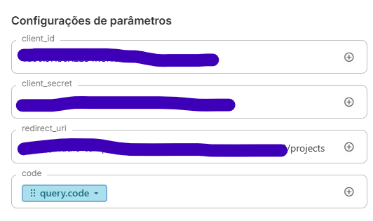
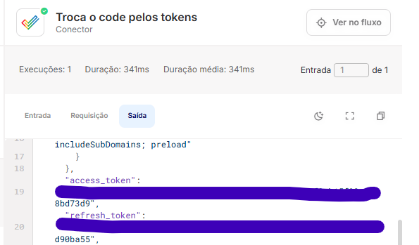
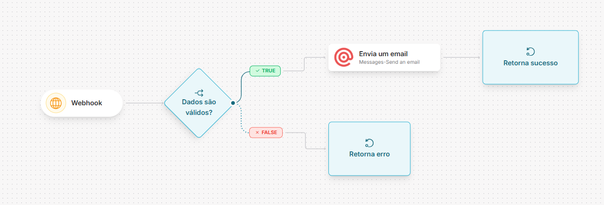
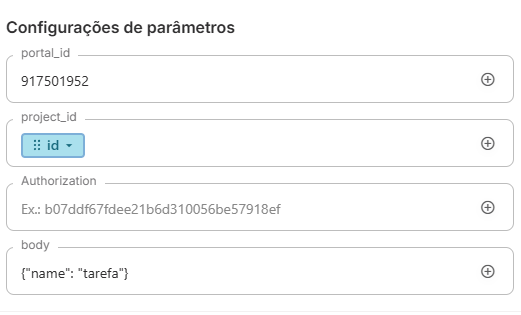

Zoho Projects
Introdução
O que é a API do Zoho Projects?
A API do Zoho Projects utiliza uma arquitetura RESTful para permitir a interação programática com a plataforma de Gestão de Projetos. A comunicação é realizada via protocolo HTTPS, com troca de dados padronizada no formato JSON.
Principais capacidades:
Gestão de Tarefas e Marcos: Permite o controle total sobre o ciclo de vida de tarefas, subtarefas e cronogramas de entrega (milestones). Colaboração e Comunicação: Facilita a interação entre equipes através de fóruns, comentários e gerenciamento de documentos. Rastreamento de Problemas (Bugs): Oferece ferramentas robustas para registrar, seguir e resolver falhas ou bugs dentro de projetos específicos.
Conceitos Fundamentais
A estrutura do Zoho Projects baseia-se nos seguintes pilares:
Estrutura de Dados e Hierarquia
Para manipular dados com sucesso, é fundamental compreender a hierarquia:
Portal: O nível organizacional mais alto, que agrupa todos os projetos, usuários e configurações globais. Projeto: Unidade de trabalho onde as metas são definidas, contendo suas próprias listas de tarefas, marcos, bugs e fóruns. Milestone (Marco): Pontos de verificação importantes que ajudam a rastrear o progresso do projeto em datas específicas. Task (Tarefa): Itens de trabalho individuais que compõem as atividades do projeto.
Pré-requisitos e Configuração no Zoho Projects
Para iniciar o desenvolvimento, são necessários:
Conta ativa no Zoho Projects. Credenciais de API: Obtidas no Zoho API Console.
Tipos de Autenticação suportados
A API suporta: OAuth2.
Obtendo uma URL de Redirect
No Skyone Studio, acesse API Gateway, crie um Gateway e uma rota sem autenticação como essa:

Você pode ver a URL gerada inteira criando um fluxo e adicionando um gatilho de gateway
Obtendo as credenciais
- Acesse o Zoho API Console
- Clique em Add client e crie um nome identificável, junto da URL gerada na etapa anterior
A homepage URL é irrelevante para esse fluxo de integração, mas necessária para o Zoho, você pode inserir qualquer URL válida como https://google.com
- No client criado, acesse a aba Client Secret e anote o Client ID e o Client Secret exibidos
Configuração da conta no Skyone Studio
- Voltando para o Skyone Studio, no conector do Zoho Projects, crie uma conta com os seguintes campos preenchidos:

- Crie uma integração e fluxo para resgatarmos o access_token e o refresh_token
- No fluxo, coloque o gatilho de API Gateway e selecione o gateway e rota criados anteriormente, insira um parâmetro de query com o nome "code"
- Insira no fluxo o conector do Zoho Projects, escolha a operação OAuth-Get Access Token, nos parâmetros e preencha: o Client ID, o Client Secret e a redirect url criada. Em code, arraste o parâmetro query, clique na seta e digite ".code"

- Ative o fluxo e acesse a URL de autenticação do Zoho, veja o formato:
https://accounts.zoho.com/oauth/v2/auth?scope={scopes}&client_id={client_id}&response_type=code&access_type=offline&redirect_uri={redirect_uri}
Use as mesmas informações que foram utilizadas no Zoho API Console Scopes representam as permissões obtidas com o token, veja mais sobre eles na documentação do Zoho
- Ao final, você deve ser redirecionado para uma tela com um JSON indicando que seu fluxo foi executado, volte ao fluxo e acesse os logs, na ultima execução do conector do Zoho Projects deve constar:

- Insira access token e refresh token na conta conectada do Zoho Projects
Operações Disponíveis
Abaixo listamos as operações mapeadas neste conector.
| Nome da Operação | Método HTTP | Descrição da Função |
|---|---|---|
| Forums-Forum Categories-Update Category | POST | Atualiza uma categoria de fórum, alterando seus atributos como nome, descrição e ordem. |
| Tags-Associate Tag | POST | Associa etiqueta a entidade escolhida no projeto, usando códigos 2‑8. |
| Tags-Dissociate Tag | POST | Remove tag de entidade específica como projeto, tarefa ou bug em projeto. |
| Tags-Get Tag Results | GET | Busca resultados de tags em todo o portal usando entidade -1 para todos os módulos. |
| Events-Get My Events | GET | Obter eventos do usuário. |
| Events-All Events | GET | Recupera todos os eventos no projeto especificado. |
| Events-Get Events Details | GET | Recupera detalhes do evento. |
| Events-Add Event | POST | Adiciona um novo evento ao Zoho Projects. |
| Events-Update Event | POST | Atualiza evento existente no Zoho Projects. |
| Events-Delete Event | DELETE | Deletar registro de evento. |
| Forums-Forum Categories-All Forum Categories | GET | Recupera todas as categorias do fórum. |
| Forums-Forum Categories-Add Category | POST | Cria uma categoria de fórum no Zoho Projects usando o escopo CREATE. |
| Tags-Delete Tag | DELETE | Exclui uma tag específica do portal. |
| Forums-Forum Categories-Delete Category | DELETE | Exclui categoria de fórum no Zoho Projects. |
| Forums-Comments - Forums-Get Forum Comments | GET | Lista todos os comentários do fórum. |
| Forums-Comments - Forums-Add Forum Comments | POST | Adiciona um comentário ao fórum. |
| Forums-Comments - Forums-Update Forum Comments | POST | Atualiza comentário de fórum no Zoho Projects. |
| Forums-Comments - Forums-Delete Forum Comments | DELETE | Exclui um comentário específico de um fórum específico. |
| Forums-Comments - Forums-Delete attachments in a forum comment | DELETE | Deletar anexos em comentário do fórum. |
| Forums-Comments - Forums-Select As Best Answer | POST | Marca comentário como melhor resposta no fórum. |
| Forums-Comments - Forums-Unselect As Best Answer | DELETE | Desmarca comentário como melhor resposta. |
| Forums-All Forums | GET | Busca todos os fóruns de um projeto no Zoho Projects. |
| Forums-Get Forum Details | GET | Lista detalhes do fórum. |
| Bugs | Issues-Create a Bug | POST | Criar um bug. |
| Bugs | Issues-Bug follower-Get Bug Followers | GET | Obtém a lista de seguidores de um bug. |
| Bugs | Issues-Bug follower-Add Bug Follower | POST | Adicionar seguidor a um bug. |
| Bugs | Issues-Bug follower-Delete Bug Follower | DELETE | Remova um seguidor de um bug. |
| Bugs | Issues-Bug Timer-Get Bug Timer | GET | Consulta detalhes de cronômetro de um bug. |
| Bugs | Issues-Bug Custom views-Get Bug Custom Views | GET | Recupera visualizações personalizadas de bugs no Zoho Projects. |
| Bugs | Issues-Bug Attachments-Get Bug Attachments | GET | Obtenha os anexos de um bug. |
| Bugs | Issues-Bug Attachments-Add Bug Attachments | POST | Anexa arquivos a um bug ou issue existente. |
| Bugs | Issues-All Bugs | GET | Obtém todos os bugs de um projeto. |
| Bugs | Issues-My Bugs | GET | Lista os bugs atribuídos ao usuário autenticado. |
| Bugs | Issues-Bug Details | GET | Obtém detalhes de um bug. |
| Forums-Add Forum | POST | Adiciona uma nova postagem ao fórum. |
| Bugs | Issues-Update a Bug | POST | Atualiza bug no Zoho Projects com os dados fornecidos na solicitação. |
| Bugs | Issues-Delete a Bug | DELETE | Exclui o bug identificado pelo ID informado. |
| Bugs | Issues-Get Bug Resolution | GET | Obtém a resolução de um bug. |
| Bugs | Issues-Bugs Default Fields | GET | Recupera todos os campos padrão de bugs para o projeto especificado. |
| Bugs | Issues-Bugs Custom Fields | GET | Recupera todos os campos personalizados de bugs do projeto. |
| Bugs | Issues-Bugs Activities | GET | Lista atividades de um bug no ZohoProjects. |
| Bugs | Issues-Get Renamed Value | GET | Obtém o valor renomeado do campo padrão. |
| Tags-Get All Tags | GET | Lista todas as tags disponíveis no portal atual. |
| Tags-Create Tag | POST | Cria tags para um portal específico. |
| Tags-Update Tag | POST | Altera tag específica existente em um portal. |
| Users-Users - Client Level-Add client user in projects | POST | Adicionar usuário de cliente a projetos. |
| Users-Project Level-Client Company-Add Existing Client Company in Portal to Project | POST | Associa uma empresa cliente existente do portal ao projeto do usuário. |
| Users-Project Level-Client Company-Delete Project Client Company | DELETE | Remover empresa cliente no projeto com ID obtido da API de usuários. |
| Users-Project Level-Users-Get project users | GET | Lista todos os usuários vinculados a um projeto específico. |
| Users-Project Level-Users-Get project existing users | GET | Recupera lista de usuários vinculados ao projeto atual. |
| Users-Project Level-Users-Add Users to a Project | POST | Adicionar usuários a um projeto específico. |
| Users-Project Level-Users-Update Users in a Project | POST | Atualiza os detalhes de um usuário específico em um projeto. |
| Users-Project Level-Users-Delete User from a Project | DELETE | Deleta usuário de um projeto. |
| Users-Project Level-Users-Add Users in UserGroups | POST | Adiciona usuários a grupos de usuário dentro de um projeto. |
| Users-Users - Client Level-Get Portal Clients | GET | Listar clientes do portal para o usuário (Portal Level). |
| Users-Users - Client Level-Add user to a client company | POST | Adiciona usuário a uma empresa cliente usando CLIENT_COMPANY_ID do portal de usuários. |
| Users-Project Level-Client Company-Get Projects associated to a Client Company | GET | Recuperar projetos vinculados à empresa do cliente. |
| Users-Users - Client Level-Delete client user in projects | DELETE | Exclui um usuário cliente de um projeto. |
| Documents-All_Documents | GET | Obtém todos os documentos do projeto especificado. |
| Documents-Version details of the document | GET | Recupera detalhes da versão do documento. |
| Documents-Add document | POST | Adicionar um documento ao ZohoProjects ou ZohoPC. |
| Documents-Upload a document to the project | POST | Carrega documento no projeto. |
| Documents-Delete a document | DELETE | Exclui um documento do sistema. |
| Documents-All folders | GET | Lista todas as pastas do projeto especificado com permissões de leitura. |
| Documents-Add Inline Attachments | POST | Upload de imagem inline via URL para uso posterior na API de projetos. |
| Search-Search across portal | GET | Busca módulos no portal por termo, incluindo projetos ativos e arquivados. |
| Search-Search across projects | GET | Lista detalhes de pesquisas dentro de um projeto. |
| Users-Portal Level-Client Company-Delete Portal Client Company | DELETE | Excluir empresa cliente do portal. |
| Forums-Update Forum | POST | Atualiza o conteúdo de um post em fórum no Zoho Projects. |
| Forums-Delete Forum | DELETE | Exclui uma postagem de fórum no ZohoProjects. |
| Forums-Delete attachments in a forum | DELETE | Exclui anexos de postagem em fórum. |
| Forums-Follow Forum | POST | Indica que o fórum deve gerar notificações em atualizações. |
| Forums-Unfollow Forum | POST | Cancelar acompanhamento de postagem em fórum. |
| Forums-Get All Tasks for forum | GET | Retorna todas as tarefas existentes de um fórum. |
| Users-Portal Level-Client Company-Get Portal Clients | GET | Listar clientes do portal para o usuário (Portal Level). |
| Users-Portal Level-Client Company-Get Portal Client Details | GET | Obter detalhes da empresa do cliente no portal. |
| Users-Portal Level-Client Company-Add Client Company to portal | POST | Cadastrar empresa cliente no portal. |
| Users-Portal Level-Client Company-update Portal Client Details | PATCH | Atualização dos detalhes da empresa do cliente no portal. |
| Bugs | Issues-Bug Comments -Delete Comment | DELETE | Exclui comentário de bug em Issues. |
| Users-Portal Level-Users-Get Portal Users | GET | Recupera lista de usuários de nível portal. |
| Users-Portal Level-Users-Get Portal User Details | GET | Recupera detalhes do usuário no portal. |
| Users-Portal Level-Users-Add User in Portal(body, portal_id) (POST) | POST | Adiciona um novo usuário ao portal. |
| Users-Portal Level-Users-Update Portal User | PATCH | Atualiza dados de um usuário dentro do portal. |
| Users-Portal Level-Users-Delete User from a Portal | DELETE | Remove um usuário de um portal com base no ID do usuário. |
| Users-Portal Level-Users-Activate / Deactivate user | POST | Ativa ou desativa o usuário do portal. |
| Users-Portal Level-Users-Get remaining no. of users in a portal | GET | Retorna o número restante de usuários disponíveis em um portal. |
| Users-Portal Level-Users-Get Projects associated to a User | GET | Consulta projetos associados ao usuário. |
| Users-Project Level-Client Company-Get Project Clients | GET | Recupera os clientes associados ao projeto do usuário. |
| Users-Project Level-Client Company-Get Project Client Details | GET | Recupera detalhes da empresa cliente em nível de projeto. |
| Tasks-Task Comments-Add Comments | POST | Adiciona comentário a uma tarefa. |
| Milestones-Update Milestone Status | POST | Atualiza status do marco. |
| Milestones-Delete Milestone | DELETE | Exclui um marco no Zoho Projects. |
| Milestones-Reorder Milestone | POST | Reordena o posicionamento de uma milestone na lista de entregas. |
| TaskLists-All Tasklists | GET | Listar todas as listas de tarefas do projeto. |
| TaskLists-Get TaskList Details | GET | Obtém detalhes de lista de tarefas. |
| TaskLists-Create Tasklist | POST | Cria lista de tarefas no Zoho Projects. |
| TaskLists-Update Tasklist | POST | Atualiza a lista de tarefas do projeto. |
| TaskLists-Delete Tasklist | DELETE | Exclui uma lista de tarefas existente. |
| TaskLists-ReOrder TaskList | POST | Reordena listas de tarefas. |
| Tasks-Task Comments-Get Comments | GET | Recupera todos os comentários da tarefa. |
| Milestones-Update Milestone | POST | Atualiza detalhes de um marco. |
| Tasks-Task Comments-Update Comments | POST | Atualiza descrição de comentário de tarefa. |
| Tasks-Task Comments-Delete Comments | DELETE | Exclui comentário de tarefa no ZohoProjects. |
| Tasks-Task Attachments-Get Task Attachments | GET | Consulta anexos de tarefa. |
| Tasks-Task Attachments-Add Task Attachments | POST | Anexar arquivos a tarefa do ZohoProjects. |
| Tasks-Task Attachments-Delete Task_Attachments | DELETE | Exclui anexos vinculados à tarefa. |
| Tasks-Task Layouts-Get All Task Layouts | GET | Exibir a lista de todos os modelos de tarefa disponíveis no portal. |
| Tasks-Task Layouts-Get Task Layout Details | GET | Recupera os detalhes de um layout de tarefa. |
| Tasks-Task Timer-Get Task Timer | GET | Recupera as informações do temporizador de uma tarefa. |
| Tasks-Task Timer-Start Timer | POST | Inicia temporizador de tarefa para rastrear tempo de execução. |
| Tasks-Task Timer-Pause Time | POST | Pausar o temporizador de tarefa. |
| Projects-Get Project Templates | GET | Retorna detalhes básicos de templates de projeto. |
| Portals-All Portals | GET | Recupera todos os portais do usuário autenticado. |
| Portals-Get Portal Details | GET | Recupera os detalhes completos de um portal específico. |
| Portals-Get Global Timers | GET | Recupera todos os cronômetros ativos em um portal. |
| Projects-Layouts & Custom Fields-Get Project Custom Fields | GET | Obtém todos os campos personalizados de projetos. |
| Projects-Layouts & Custom Fields-Get Project Layouts | GET | Lista os layouts e campos personalizados de um projeto. |
| Projects-Layouts & Custom Fields-Get Project Custom Fields Layouts | GET | Retorna a disposição de campos customizados de projetos. |
| Projects-Project Groups-Get Project Groups | GET | Retorna a lista de grupos de projeto associados ao projeto. |
| Projects-Project Groups-Add Project Groups | POST | Adiciona um ou mais grupos ao projeto. |
| Projects-All Projects | GET | Recuperar todos os projetos do portal do usuário autenticado. |
| Projects-Project Details | GET | Lista todos os detalhes completos do projeto. |
| Tasks-Task Timer-Stop Time | POST | Interrompe ou registra a duração do timer de uma tarefa. |
| Projects-Create a Project | POST | Crie um novo projeto no ZohoProjects. |
| Projects-Update a Project | POST | Atualiza um projeto no Zoho Projects. |
| Projects-Delete a Project | DELETE | Deleta um projeto. |
| Dashboard API-Project Activities | GET | Listar as atividades recentes do projeto. |
| Dashboard API-Project Status | GET | Retorna os status de um projeto especificado. |
| Dashboard API-Add Project Status | POST | Adiciona um novo status ao projeto no ZohoProjects. |
| Milestones-All Milestones | GET | Lista todos os marcos de um projeto no Zoho Projects. |
| Milestones-My Milestones | GET | Obtém todos os marcos atribuídos a um usuário. |
| Milestones-Milestone Details | GET | Obter todos os detalhes de um marco. |
| Milestones-Create Milestone | POST | Criar milestone no Zoho Projects. |
| Timesheets-Issue | Bug-Delete Time Log for a Bug | DELETE | Exclui registro de tempo de um bug. |
| Tasks-Unfollow a Task | POST | Deixa de seguir uma tarefa específica. |
| Timesheets-Task-Get Time Logs for a Task | GET | Obtém logs de tempo de uma tarefa específica. |
| Timesheets-Task-Add Time log for a task | POST | Adicionar registro de tempo a uma tarefa. |
| Timesheets-Task-Update Time log for a task | POST | Atualiza registro de tempo de uma tarefa. |
| Timesheets-Task-Approve Time Log for a Task | POST | Aprova registro de tempo para uma tarefa. |
| Timesheets-Task-Delete Time Log for a Task | DELETE | Deleta registro de tempo de uma tarefa. |
| Timesheets-Issue | Bug-Get Time Logs for a Bug | GET | Obter logs de tempo para um bug. |
| Timesheets-Issue | Bug-Add Time Log for a Bug | POST | Registra horas em um bug. |
| Timesheets-Issue | Bug-Update Time Log for a Bug | POST | Atualiza o registro de tempo de um bug no Timesheet. |
| Timesheets-Issue | Bug-Approve Time Log for a Bug | POST | Aprovar registro de tempo de um bug. |
| Tasks-Add Followers to a Task | POST | Adiciona seguidores a uma tarefa. |
| Timesheets-General-Add Time for a General Log | POST | Adicionar registro de tempo a outras tarefas (Logs Gerais). |
| Timesheets-General-Update Time for a General Log | POST | Atualiza registro de tempo para outras tarefas. |
| Timesheets-General-Approve Time for a General Log | POST | Aprova log de tempo geral. |
| Timesheets-General-Delete Time for a General Log | DELETE | Exclui registro de tempo de tarefas não associadas. |
| Timesheets-Get All Time Logs | GET | Recupera todos os registros de tempo do projeto. |
| Timesheets-Get My Time Logs | GET | Recupera logs de tempo de todos ou usuários específicos. |
| Timesheets-Get Timesheet Restriction Details | GET | Recupera os detalhes de restrição do timesheet. |
| Bugs | Issues-Bug Comments -Get Bug Comments | GET | Busca comentários de um bug. |
| Bugs | Issues-Bug Comments -Get Comments for Multiple Bugs | GET | Recupera comentários de vários bugs. |
| Bugs | Issues-Bug Comments -Add Comment | POST | Adicionar comentário a um bug. |
| Tasks-Task Dependency-Remove Dependency | POST | Remove dependência entre tarefas. |
| Tasks-Task Timer-Resume Timer | POST | Reinicia o temporizador de uma tarefa. |
| Tasks-Task Timer-Remove Timer | POST | Remover o timer associado a uma tarefa específica. |
| Tasks-Sub Task-Get Subtasks | GET | Obter todas as subtarefas de uma tarefa. |
| Tasks-Sub Task-Create SubTask | POST | Cria subtarefa no Zoho Projects. |
| Tasks-Bugs-Get Associated Bugs | GET | Obtém bugs associados a uma tarefa. |
| Tasks-Task Customviews-Get Task Custom Views | GET | Recupera todas as visualizações personalizadas de tarefa. |
| Tasks-Task Customviews-Get My Task Custom Views | GET | Recupera todas as visualizações personalizadas de tarefa de sua conta. |
| Tasks-Task Dependency-Set Dependency Between Tasks | POST | Definir dependência entre duas tarefas. |
| Tasks-Task Dependency-Update Lag between Dependent Tasks | POST | Atualiza atraso entre tarefas dependentes. |
| Tasks-Task Dependency-Update Dependency Type | POST | Atualiza tipo de dependência entre tarefas. |
| OAuth 2.0 Set up - Projects-Generate Token-Generate Access & Refresh Token | POST | Emite token de acesso e refresh para o projeto autenticado. |
| Tasks-Get My Tasks | GET | Recupera todas as tarefas do seu portal. |
| Tasks-All_Tasks | GET | Recupera tarefas principais de projeto, excluindo subtarefas. |
| Tasks-Get All Tasks for TaskList | GET | Lista todas as tarefas de um tasklist. |
| Tasks-Task Details | GET | Recupera todos os detalhes de uma tarefa no Zoho Projects. |
| Tasks-Task Activities | GET | Retorna quem e quando alterou uma tarefa específica. |
| Tasks-Create Task | POST | Cria tarefa no Zoho Projects. |
| Tasks-Update Task | POST | Atualiza uma tarefa em um projeto. |
| Tasks-Delete Task | DELETE | Exclui todas as tarefas do projeto informado. |
| Tasks-Reorder Task | POST | Reordena as tarefas do projeto especificado. |
| Tasks-Move task | POST | Move uma tarefa para nova posição dentro da lista de tarefas. |
Algumas operações tem um parâmetro Authorization, esse parâmetro é opcional e não deve ser preenchido caso esteja usando com uma conta conectada já autenticada
Os exemplos das operações seguem o conceito da collection Postman oficial em Formdata, mas o conteúdo deve ser enviado em JSON, use os exemplos para entender os parâmetros que devem ser enviados, em caso de dúvida, consulte a documentação (os nomes das operações são os mesmos)
Exemplo de Fluxo utilizando o Zoho Projects
Este exemplo demonstra como construir um fluxo básico testando scopes e criações, usando as operações Projects-Create a Project e Tasks-Create a Task

Veja parâmetros enviados para criar uma task:

Documentação Oficial da API: Zoho Projects API Resources